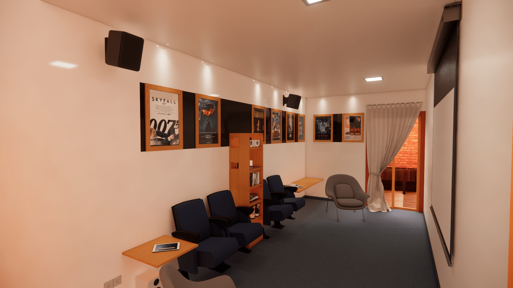
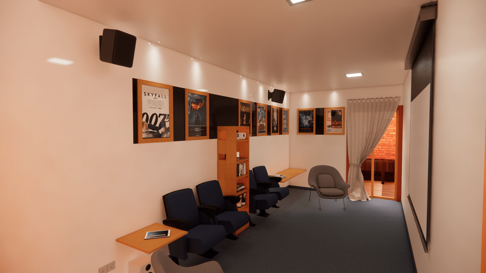

Proyectos residenciales
2020
 



Casa Sísifo
Proyecto de simulación que está pensado para personas mayores de 60 años y en época de pandemia debido al coronavirus. Por este motivo la vivienda cuenta con una zona desinfección en el ingreso y esta se encuentra sin techar para que la ventilación sea efectiva. El objetivo de esta vivienda es poder facilitar el desarrollo de las actividades de estos residentes sin necesidad de salir de la casa. Esto mismo quiere comunicar el concepto empleado en el proyecto, Sin Parar, no dejar de realizar alguna actividad por algún impedimento de edad o salida. Espacios como un huerto, sala de cine o piscina, buscan fomentar ese pensamiento.
2020


Casa de playa
Proyecto de simulación desarrollado en la playa de Zorritos en el departamento de Tumbes para el cliente Juan Diego Flórez. Este está basado en un proyecto desarrollado en el club Golf de Asia, no habiendo alterado el terreno y la estructura de la vivienda, solo trasladando a Tumbes de acuerdo a los arquitectos. Siendo el usuario una persona que radica en la parte montañosa de Europa, se escoge la zona costera del Perú para colocar su residencia vacacional y pueda disfrutar de este contraste con su familia. El concepto escogido para este proyecto es Valutare y significa valorar en italiano. Se ha empleado esto porque se quiere dar un valor a cada ambiente, salir de lo ordinario. El estilo que se maneja para esta propuesta es Ecléctico debido a la unión de dos estilos: minimalismo y étnico.
2023


Departamento 401
Proyecto de simulación que cuenta con 2 dormitorios, ya sea para una familia con un(a) hijo(a) o para 2 compañeros, en un departamento flat de 103 m². El diseño se inspiró en el estilo Escandinavo debido a que es un estilo neutro y se adecúa muy bien a cualquier estilo debido a sus espacios abiertos que transmiten una sensación de amplitud que va de la mano con la iluminación, tanto natural como artificial, como del uso del color blanco. El empleo de la madera en distintas tonalidades también busca aportar calidez a cada rincón del departamento complementándose con elementos naturales como piedras y vegetación.
2023


Departamento Juliette Hörler
Proyecto de simulación desarrollado para la cliente Juliette Hörler que consta de un diseño de un departamento flat de 160 m² ubicado en el distrito de San Isidro. Los principales requerimiento por parte del cliente fueron tener una sala de espera para recibir visitas de manera espontánea y que haya un baño cerca a la entrada del domicilio, dar protagonismo a la cocina ya que es una persona que disfruta del arte culinario, una sala de estudio para poder trabajar de manera remota o tener reuniones de trabajo sin ningún inconveniente, bastante iluminación y ventilación natural, y basar la propuesta de diseño en el estilo Moderno.
2023


Departamento Ben Varlet
Proyecto de simulación desarrollado para el cliente Ben Varlet que consta de una remodelación de un departamento flat de 70 m² ubicado en el distrito de San Miguel. Los principales requerimientos por parte del cliente fueron basar el diseño en el estilo Nórdico, zonificar un espacio para el comedor y otro para la sala, empleo de repisas flotantes y colocación de cuadros. Se optaron por colores neutros para transmitir tranquilidad ya que la personalidad del usuario es parca y no busca tener tanto protagonismo. Eso mismo se quiere proyectar al momento de cambiar la textura o un tipo de material con otro como por ejemplo el cambio de piso entre el dormitorio y el baño. En los dormitorios y la sala se colocó un acento de color debido al signficado del color con la actividad a realizar en cada espacio.